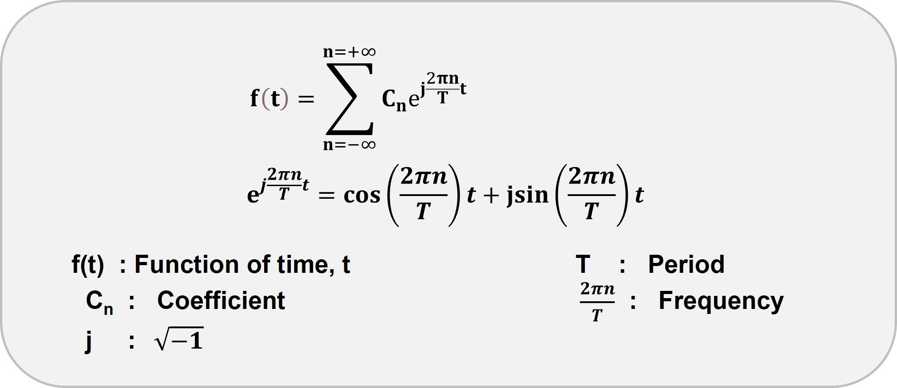

by Joyita Bhattacharya
Fourier series and Fourier transform are important mathematical operations for analyzing different wave-like patterns. Wave-like patterns are omnipresent in nature in the electromagnetic radiations, sound waves, electrical signals, and even images. The French mathematician, Joseph Fourier, came up with the idea of such a mathematical tool while solving the problem related to heat conduction. Even though this topic of Fourier transform has been widely studied, many of us still find it challenging to grasp the basic concept.
In particular, when we want to apply FT to practical problems such as digital signal processing or image processing, we cannot use the infinite or continuous form of FT. We need to use the discrete form of FT, also known as DFT. DFT becomes more complex as it involves sampling. We will discuss this in further detail in the due course.
Here I provide a stepwise explanation of FT and DFT along with some relevant code snippets.
Let us start by addressing the most fundamental question:What is a Fourier series and what is its relation to Fourier Transform?
A Fourier series represents a periodic function as a sum of sine and cosine waves. Here is the equation describing the series.
A periodic function repeats at regular intervals, exemplified by the following function:
As shown graphically, this function repeats at an interval of 2π. This time interval is termed a 'period or cycle.' Frequency is the inverse of a period. We encounter such time-dependent periodic functions as electrical, audio, and radio signals in our daily lives. Moreover, signals can also be space-dependent, for example, an image.
The Fourier transform is applied to the series to extract the frequency, amplitude, and phase information of these signals. In other words, this operation transforms a signal in the time domain into the frequency domain. The below equation represents the 1D Fourier transform of time-dependent function f(t):
Where F(k) is a function of frequency, k; j is the imaginary number. The equation denotes the continuous Fourier transform since the frequency and time variables are continuous-valued, varying from -∞to +∞. Following Euler's theorem, the term exp(-jkt) is expanded as follows:
cos(kt) and -jsin(kt) are the real and imaginary component of the complex exponential (exp(-jkt)) respectively. In a nutshell, this transform operator projects the real space components onto the Fourier or frequency space.
Having explained the math of Fourier transform with time-dependent function, we will now concentrate on applying this tool to images.
Images contain spatial information instead of time. A digital image is composed of basic units called pixels, and each pixel is assigned a particular value of intensity varying between 0 and 255. An image's spatial domain houses information on pixel intensity variation with spatial coordinates. We apply the transform operator over fixed points or pixels on the image to retrieve frequencies and phase spectra. This operation is called Discrete Fourier Transform (DFT).
Understanding the process in the spatial domain
✓Consider a simple periodic 1D sine function with eight evenly spaced points/ samples (N).
✓ Apply DFT
We will now apply DFT to f(x) to convert it to the frequency domain.
Hence, we need to multiply the real space function f(x) with the exponential term to get the frequency values (k) in the Fourier space. The mathematical steps are as follows:
✓Replace f(x) with sin (π/4 x),
✓ Summation over spatial domain samples, xₙ, ranging from n =0 to n = 7 (N-1=8-1=7) and k ranging from 0 to 7 such that we get eight F(k) values.
Similarly, we calculate the other frequency terms in Fourier space. The table below shows their complex values and absolute values.
The symmetry or folding is observed at Nyquist frequency, defined as half of the sampling rate (highlighted in yellow in the above table). The sampling rate is the number of points/ samples in one cycle. In the given example, the sampling rate is 8, and the Nyquist frequency 4.
We then plot the absolute value (amplitude) for each frequency. Similarly, any N-dimensional periodic function follows the same procedure.
We apply the inverse Fourier transform algorithm if we want to obtain the original signal (real space) from the frequency domain. Here is the mathematical equation defining the operation for a 1D function.
Hence, F(k) and f(x) are a Fourier transform pair represented as:
Now that we are comfortable with the math behind Fourier transform, I will focus on the coding part of the operation in the subsequent section.
I have used Python for coding, and I will demonstrate each step of the process considering a 2D periodic function:

The 2D and 3D representations of the image are displayed. The 3D version distinctly depicts the sinusoidal characteristics of the image.
Click here to know about simulaion of images from periodic functions.
Here is the Fourier transform equation applied to the above image (50 x 50; N= 50).
Since Fast Fourier Transform (FFT) significantly reduces the computational time, we employ this algorithm to compute discrete Fourier transform (DFT). In general, for a 1D FFT of size N, the computational complexity is proportional to O(Nlog2N) [O stands for order] as compared to O(N2) in DFT. Note that 'complexity' here indicates the number of computational steps required for processing.
The code block and the output are displayed.
f_f = np.fft.fft2(f)
f_f001=plt.imshow(abs(f_f), cmap ='gray')
plt.colorbar(f_f001)
plt.show()The bright spots in Fourier space represent the high amplitude and low frequency, while the dark regions denote the low amplitude and high-frequency area.
We then employ the fft. fftshift function of numpy to modify the spectrum now spanning from -N/2 to + N/2 in both x (k) and y (ky) directions with F(0,0) or the DC (direct current) component at the center.
 Code output
Code outputFor better clarity and visual understanding, I have illustrated the centering of the F(0,0) process in this diagram.
The red dots are the corresponding negative values of F(kx, ky). Since the image function is periodic, it repeats itself in all directions generating pairs of symmetrically positioned Fourier values in the frequency (Fourier) domain. This example shows two sets of F(kx, ky) values symmetrically placed around F(0,0).
Code Availability: my GitHub link
Knowing a concept is the first step toward productivity. Fourier transform is one such complex topic where understanding each step is necessary when it comes to coding or otherwise. This post aimed to clarify each step of the transform, and I sincerely hope readers find it helpful and understandable.